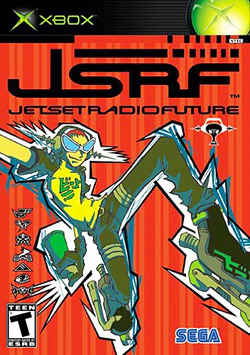

HOW WAS THE GAME MADE?
Jet Set Radio is a Japanese action-platform video game developed by Smilebit and published by Sega for the Dreamcast console. It was released in Japan on June 29th, 2000, and was released in America on October 31st, under the name Jet Grind Radio.
Smilebit was a studio formed under Sega, and consisted of former members of Team Andromeda, a gaming company known for their Panzer Dragoon games.
The development team consisted of less than 25 developers, with the majority of them being under 25.
Masayoshi Kikuchi served as Director, and Ryuta Ueda was the Lead Art Director.
The game’s objective was to create a unique experience of popular modern culture, which made it distinguishable among other game genres at the time.
The creative team drew inspiration from late 1990s pop culture with the intent to create something cool and distinct from the other games Sega had created, which were usually fantasy and science fiction. The game also drew influence from 1980s American hip hop culture and had themes of anti-establishment.
DID YOU KNOW?
Jet Set Radio is recognized as the FIRST VIDEO GAME EVER to use cel-shading, a shading technique developed by Smilebit that uses shading to create a thick outline around a 3D model, so it’ll appear as a moving cartoon. Pretty cool.
This new shading technique was hard to replicate for other companies, as it pushed the limitations of most of the consoles that were out at the time.
CAN I STILL PLAY IT NOW?
Of course, if you happen to have a Dreamcast after all this time, then that's the perfect place to play!
However, there is now an HD remaster of the game that was re-released in 2012, which made the game available to play on newer platforms such as the Xbox 360, PlayStation 3, Windows PC, and iOS. The game's availability varies for each platform.
CAN'T GET ENOUGH?
Jet Set Radio isn’t the only game in the series. In 2002, Smilebit released a sequel to the world-renowned game, called “Jet Set Radio Future”. You should check that out, too! 